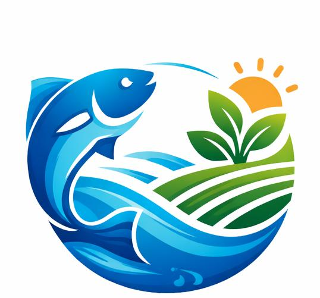
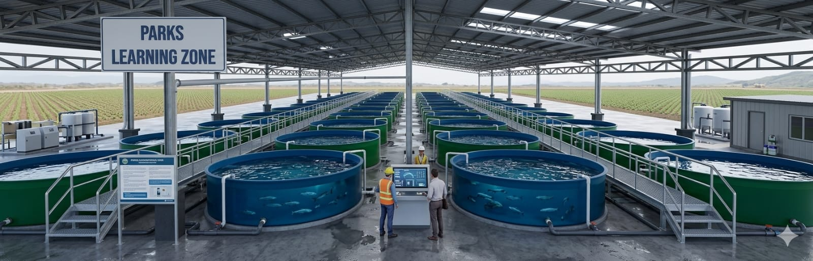
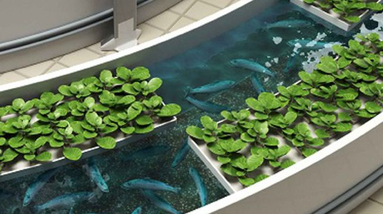
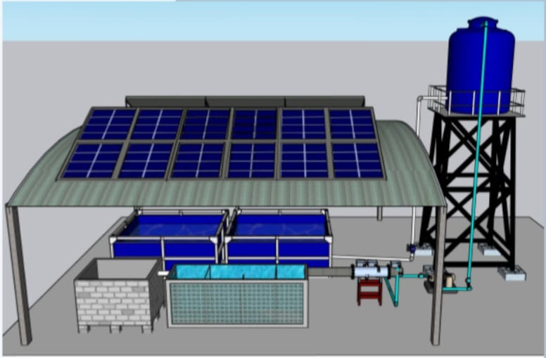
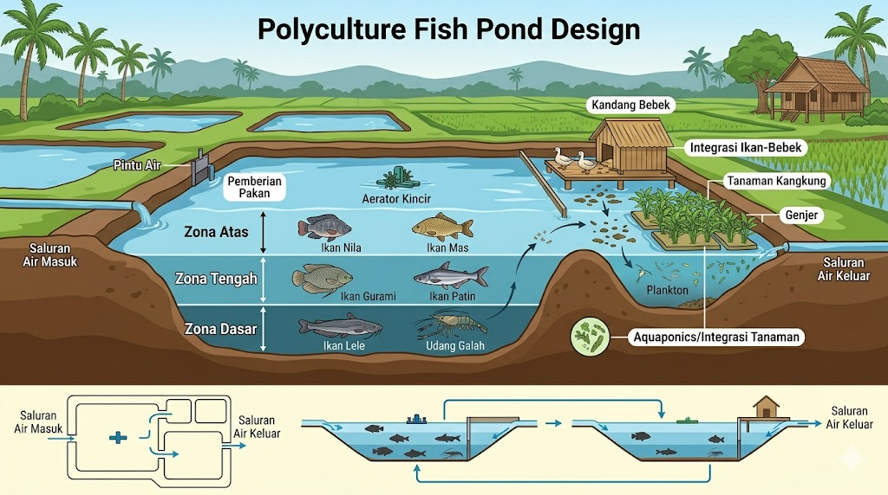

BlueHarvestBlueHarvest adalah website informasi yang berfokus pada teknologi budidaya perikanan berkelanjutan. Website ini menyediakan berbagai materi edukatif untuk membantu pembudidaya memahami sistem budidaya modern secara lebih mudah dan praktis.
Informasi yang disajikan mencakup berbagai teknologi seperti Bioflok, Aquaponik, Recirculating Aquaculture System (RAS), Polikultur serta manajemen kualitas air dan efisiensi pakan dalam kegiatan budidaya.
BlueHarvest hadir sebagai media edukasi yang mendukung penerapan budidaya yang efisien, ramah lingkungan, dan berkelanjutan, dengan pendekatan yang sederhana namun tetap berbasis konsep ilmiah.

Bioflok adalah teknologi budidaya perikanan intensif yang memanfaatkan mikroorganisme (bakteri baik) untuk mengubah limbah organik (sisa pakan & kotoran) menjadi gumpalan protein (flok) yang dapat dimakan kembali oleh ikan. Sistem ini mengandalkan aerasi kuat untuk mengubah amonia beracun menjadi pakan, meningkatkan efisiensi pakan, dan hemat air. Sistem ini banyak digunakan pada budidaya ikan seperti nila, lele, dan udang kerena efisien dan ramah lingkungan.
TRADISIONAL:→ Cek air manual 2x/hari → Terlambat → Ikan mati 30%
SMART BIOFLOK: → Monitoring 24/7 otomatis → Respons instan → Survival 95%
Kolam bioflok dilengkapi sensor:
Sistem Bioflok bekerja dengan memanfaatkan probiotik dan sumber karbon untuk mengubah limbah (amonia) menjadi bioflok yang berguna sebagai pakan alami, sehingga kualitas air tetap stabil. Sensor (pH, suhu, DO, amonia) memantau kondisi kolam secara real-time, sementara aerator menjaga ketersediaan oksigen dan sirkulasi air. Dengan dukungan sistem smart (otomatis & digital), data dianalisis dan sistem dapat memberikan notifikasi atau melakukan tindakan cepat saat terjadi perubahan kondisi.

Sistem aquaponik berkelanjutan SMART-CYCLE BIOFLOK adalah metode budidaya terpadu yang menggabungkan pemeliharaan ikan (akuakultur) dengan penanaman tanaman (hidroponik) dalam satu siklus tertutup, di mana limbah dari ikan dimanfaatkan sebagai nutrisi bagi tanaman, kemudian air yang telah disaring oleh tanaman digunakan kembali untuk budidaya ikan.
Menghasilkan sistem budidaya ikan dan tanaman yang efisien, ramah lingkungan, dan berkelanjutan melalui pemanfaatan limbah sebagai sumber nutrisi dalam satu siklus tertutup.
Sistem aquaponik bekerja dengan prinsip siklus tertutup, di mana ikan, tanaman, dan mikroorganisme saling berhubungan dalam satu aliran yang berkelanjutan.

Smart RAS (IoT & AI Monitoring) adalah pengembangan dari sistem Recirculating Aquaculture System (RAS) yang menggabungkan teknologi Internet of Things (IoT) dan Artificial Intelligence (AI) untuk memantau dan mengelola budidaya ikan secara otomatis dan real-time.
RAS adalah sistem budidaya ikan dengan sirkulasi air tertutup (air digunakan kembali setelah difilter). Ketika ditambahkan IoT dan AI, sistem ini jadi lebih pintar (smart) karena bisa:
Sensor dipasang di kolam/tangki untuk membaca: Suhu air, pH, Oksigen terlarut (DO), Amonia (NH₃), dan Kekeruhan. Data dikirim ke Smartphone, Laptop, atau Cloud system.
Digunakan untuk memprediksi kualitas air, deteksi dini penyakit, dan mengatur pakan otomatis. Contoh: Jika oksigen turun, AI otomatis menyalakan aerator.
Meliputi Pompa air, Aerator, Heater/pendingin, dan Automatic Feeder.

Polikultur merupakan sistem budidaya yang memelihara lebih dari satu jenis organisme akuatik dalam satu wadah atau ekosistem yang sama. Sistem ini dirancang agar setiap organisme memiliki peran berbeda sehingga dapat saling mendukung dan meningkatkan efisiensi pemanfaatan sumber daya.
Sistem polikultur memanfaatkan perbedaan kebiasaan makan (feeding habit) dan zona hidup organisme, sehingga tidak terjadi persaingan yang berlebihan. Contohnya, ikan yang memakan pakan di permukaan dapat dikombinasikan dengan organisme dasar (bottom feeder) yang memanfaatkan sisa pakan.
Contoh Kombinasi Polikultur:
Dalam sistem polikultur:
Silahkan hubungi kami untuk informasi lebih lanjut mengenai implementasi teknologi budidaya atau kolaborasi edukasi lainnya.